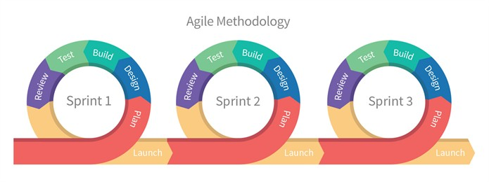

Agilidade
Fundamentos da agilidade
Agile Mindset
Um modelo de pensamento que abraça a compreensão, colaboração, aprendizado e flexibilidade como pilares para alcançar resultados de alto desempenho. Essa abordagem cognitiva capacita equipes a se ajustarem às mudanças em vez de tentar evitá-las.
Agile Manifesto
Representa uma declaração que estabelece valores e princípios cruciais para a criação de software. Apesar de sua origem no campo tecnológico, os efeitos do Manifesto e da abordagem ágil que ele preconiza têm uma influência incontestável em empresas de diversas áreas.
O documento foi criado em fevereiro de 2001, por 17 profissionais.
Site para consulta: Agile Manifesto (em português)
Os Quatro Valores do Manifesto Ágil
-
Indivíduos e interações acima de processos e ferramentas:
Isso enfatiza a importância das pessoas em qualquer projeto. As interações entre membros da equipe e com os clientes são cruciais para o sucesso.
-
Software em funcionamento acima de documentação abrangente:
Isso significa que o foco deve estar na entrega de um software que funcione e atenda às necessidades, em vez de gastar excesso de tempo na criação de documentação detalhada.
-
Colaboração com o cliente acima de negociação de contratos:
A colaboração direta com os clientes é valorizada mais do que a negociação de contratos rígidos. Isso permite que a equipe responda às necessidades do cliente de maneira mais ágil.
-
Responder a mudanças acima de seguir um plano:
A capacidade de se adaptar a mudanças nas prioridades ou requisitos é considerada mais importante do que aderir rigidamente a um plano inicial. Isso reflete a natureza volátil e em constante evolução dos projetos de desenvolvimento de software e enfatiza a agilidade na abordagem.
Fonte: Manifesto Ágil
Modelo Waterfall (Cascata):
Fonte: Waterfall
- Sequencial: O desenvolvimento de software ocorre em fases sequenciais e lineares, como requisitos, design, implementação, testes e manutenção.
- Requisitos Fixos: Os requisitos são definidos no início do projeto e geralmente não podem ser alterados durante o desenvolvimento.
- Ênfase na Documentação: Há uma forte ênfase na documentação detalhada em cada fase do processo.
- Feedback Tardio: Os clientes veem o produto finalizado apenas no final do ciclo de desenvolvimento.
- Rigidez: Pouca flexibilidade para se adaptar a mudanças nos requisitos ou no ambiente.
Abordagem Agile:
Fonte: Agile
- Iterativa e Incremental: O desenvolvimento ocorre em ciclos curtos chamados "sprints" (Scrum) ou iterações (Kanban), onde funcionalidades são entregues de forma incremental.
- Requisitos Adaptativos: Os requisitos podem ser ajustados ao longo do projeto para refletir as necessidades mutáveis do cliente.
- Comunicação Direta: Colaboração frequente entre desenvolvedores, clientes e stakeholders é incentivada.
- Prototipagem e Testes Contínuos: Protótipos são frequentemente criados e testes são realizados de forma contínua durante o desenvolvimento.
- Flexibilidade: Maior capacidade de adaptação a mudanças e respostas rápidas às necessidades do cliente.
Em resumo, o modelo Waterfall segue uma abordagem sequencial e rígida, enquanto o Agile adota uma abordagem iterativa, flexível e colaborativa, priorizando a entrega de valor ao cliente de forma mais rápida e contínua. O Agile é frequentemente preferido em projetos onde os requisitos são voláteis ou quando a velocidade de entrega é crucial.
Principais Diferenças entre Waterfall e Agile
As principais diferenças entre as abordagens Waterfall (Cascata) e Agile estão relacionadas à sua filosofia de desenvolvimento, estrutura de trabalho e forma de lidar com mudanças. Aqui estão as principais distinções:
1. Abordagem de Desenvolvimento:
- Waterfall: O Waterfall segue uma abordagem sequencial, onde as fases do projeto (requisitos, design, implementação, testes, manutenção) ocorrem em ordem fixa e cada fase é concluída antes do início da próxima. Não há retorno às fases anteriores uma vez que uma fase é concluída.
- Agile: O Agile adota uma abordagem iterativa e incremental, dividindo o projeto em ciclos curtos chamados sprints (Scrum) ou iterações (Kanban), onde funcionalidades são entregues incrementalmente. O feedback e a adaptação ocorrem ao longo do projeto.
2. Flexibilidade e Mudanças:
- Waterfall: O Waterfall tende a ser inflexível em relação às mudanças nos requisitos. Os requisitos são definidos no início e geralmente não podem ser alterados sem uma grande revisão do projeto.
- Agile: O Agile é altamente adaptativo às mudanças. Os requisitos podem ser ajustados durante o desenvolvimento para refletir as necessidades mutáveis do cliente. A flexibilidade é uma característica fundamental.
3. Comunicação e Colaboração:
- Waterfall: A comunicação geralmente é formal e ocorre principalmente no início e no final do projeto. Há menos colaboração direta entre a equipe de desenvolvimento e os clientes/stakeholders.
- Agile: O Agile promove a comunicação contínua e colaboração frequente. Os clientes e stakeholders estão envolvidos no processo de desenvolvimento, o que permite feedback constante e ajustes rápidos.
4. Entrega de Valor ao Cliente:
- Waterfall: A entrega de valor ao cliente ocorre apenas no final do projeto, após todas as fases terem sido concluídas.
- Agile: O Agile prioriza a entrega de valor ao cliente de forma incremental e contínua, com funcionalidades úteis sendo entregues em cada iteração ou sprint.
5. Documentação:
- Waterfall: O Waterfall enfatiza a criação de documentação detalhada em cada fase do projeto.
- Agile: Embora a documentação seja valorizada no Agile, ela é menos extensiva e mais focada no que é essencial para o entendimento do projeto.
6. Riscos:
- Waterfall: Os riscos são identificados e tratados principalmente no início do projeto, o que pode levar a problemas significativos se novos riscos surgirem posteriormente.
- Agile: O Agile lida com riscos de forma mais contínua, identificando e abordando-os ao longo do desenvolvimento.
Em resumo, o Waterfall é mais adequado para projetos com requisitos estáveis e bem definidos, enquanto o Agile é preferível para projetos com requisitos voláteis, onde a flexibilidade, a adaptação rápida e a entrega contínua de valor são essenciais. A escolha entre as duas abordagens depende das características específicas do projeto e das preferências da equipe.
Mundo VUCA
Fonte: VUCA
O termo "VUCA" é uma sigla que representa um conceito usado para descrever o ambiente de negócios e sociedade em geral, caracterizado por sua Volatilidade (Volatility), Incerteza (Uncertainty), Complexidade (Complexity) e Ambiguidade (Ambiguity). Essas quatro características descrevem as condições em constante mudança e desafios que muitas organizações e indivíduos enfrentam nos tempos modernos. Vamos explorar cada componente do VUCA:
1. Volatilidade (Volatility):
Refere-se à rapidez e imprevisibilidade das mudanças no ambiente. A volatilidade significa que eventos e tendências podem surgir e desaparecer rapidamente, exigindo respostas ágeis e adaptativas.
2. Incerteza (Uncertainty):
Indica a falta de clareza sobre o futuro. A incerteza implica que é difícil prever eventos futuros com precisão, tornando a tomada de decisões mais desafiadora.
3. Complexidade (Complexity):
Refere-se à intricada rede de fatores e interações que compõem o ambiente. A complexidade significa que os problemas muitas vezes não têm soluções simples e podem ser afetados por múltiplos fatores interconectados.
4. Ambiguidade (Ambiguity):
Envolve a falta de clareza sobre as causas e efeitos das situações. A ambiguidade torna difícil entender completamente as situações e tomar decisões informadas.
O conceito VUCA foi originalmente desenvolvido no contexto militar para descrever a natureza incerta e desafiadora das operações em campo. No entanto, ao longo do tempo, o termo foi adotado em muitos outros campos, incluindo negócios, gestão e economia, para descrever a complexidade do ambiente global e as mudanças rápidas que as organizações enfrentam.
Para enfrentar um mundo VUCA, as organizações e indivíduos muitas vezes buscam estratégias que envolvem maior agilidade, capacidade de adaptação, aprendizado contínuo e tomada de decisões informadas, mesmo em face de incertezas e ambiguidades. A compreensão do VUCA é fundamental para a gestão eficaz e a navegação bem-sucedida em ambientes desafiadores e em constante transformação.
Preparação para um Mundo VUCA
Preparar-se para um mundo VUCA (Volátil, Incerto, Complexo e Ambíguo) envolve o desenvolvimento de habilidades e a adoção de estratégias que permitam a você e às organizações enfrentar e prosperar em ambientes desafiadores e em constante mudança. Aqui estão algumas diretrizes para se preparar:
1. Fomentar a Resiliência:
- Desenvolva sua resiliência emocional e psicológica para lidar com situações de estresse e incerteza.
- Cultive uma mentalidade de aprendizado, vendo desafios como oportunidades de crescimento.
2. Aprimorar a Adaptabilidade:
- Esteja disposto a ajustar suas estratégias e planos rapidamente à medida que as condições mudam.
- Esteja aberto a novas ideias e métodos, e incentive a experimentação.
3. Desenvolver Habilidades de Tomada de Decisão:
- Aprimore suas habilidades de tomada de decisão em ambientes de incerteza.
- Considere a coleta de dados e o uso de análises para tomar decisões informadas.
-
4. Fomentar a Comunicação e a Colaboração:
- Pratique a comunicação clara e eficaz para garantir que todos compreendam as metas e estratégias.
- Promova um ambiente de trabalho colaborativo para compartilhar conhecimento e experiência.
-
5. Incentivar a Inovação:
- Crie uma cultura de inovação que encoraje a geração de novas ideias e soluções.
- Esteja disposto a experimentar e a aprender com o fracasso.
-
6. Desenvolver Competências Tecnológicas:
- Esteja atualizado em relação às tecnologias relevantes ao seu campo.
- Explore como a automação e a inteligência artificial podem ser usadas para melhorar processos.
-
7. Investir em Aprendizado Contínuo:
- Priorize o desenvolvimento profissional e pessoal por meio da aprendizagem contínua.
- Esteja ciente das tendências e mudanças em seu setor e área de atuação.
-
8. Focar na Agilidade Organizacional:
- Se você faz parte de uma organização, incentive a implementação de métodos ágeis de gestão, como Scrum ou Kanban.
- Esteja preparado para ajustar estratégias e objetivos em resposta a mudanças no ambiente de negócios.
-
9. Promover a Visão de Longo Prazo:
- Mantenha uma visão de longo prazo, mesmo ao lidar com desafios imediatos.
- Planeje estrategicamente para posicionar-se de forma favorável em cenários futuros.
-
10. Lidar com a Ambiguidade:
- Aceite que nem sempre haverá respostas claras ou soluções óbvias.
- Desenvolva sua capacidade de tolerar ambiguidades e buscar soluções práticas.
-
11. Cultivar Redes de Apoio:
- Mantenha uma rede de contatos sólida para obter apoio, trocar ideias e aprender com outros profissionais.
-
12. Avaliar e Ajustar Regularmente:
- Avalie regularmente sua estratégia e progresso, fazendo ajustes conforme necessário.
Preparar-se para um mundo VUCA requer uma mentalidade aberta e adaptável, bem como a disposição de abraçar a mudança e a incerteza como oportunidades para crescimento e inovação. Ao investir em suas habilidades pessoais e profissionais, você estará mais bem preparado para enfrentar os desafios e prosperar em ambientes complexos e em constante evolução.
O Modern Agile

Fonte: Modern Agile
O "Modern Agile" é uma abordagem ágil que se baseia nos princípios fundamentais do Manifesto Ágil, mas busca simplificar e atualizar esses princípios para melhor se adaptar aos desafios e complexidades do mundo contemporâneo. O Modern Agile é uma iniciativa que se concentra em quatro diretrizes principais:
-
Tornar as Pessoas Incríveis:
- Esta diretriz enfatiza a importância de focar nas pessoas, seu crescimento pessoal e profissional, e criar um ambiente onde elas possam ser incrivelmente eficazes. Isso inclui promover a aprendizagem contínua, melhorar as habilidades de comunicação e colaboração e garantir que as equipes tenham o apoio necessário para inovar e produzir resultados excepcionais.
-
Entregar Valor Incrível:
- O Modern Agile coloca grande ênfase na entrega contínua de valor ao cliente. Isso significa que as equipes devem se concentrar em fornecer produtos e serviços que sejam verdadeiramente valiosos para os clientes, em vez de apenas cumprir tarefas ou seguir processos. A ênfase está na qualidade, na satisfação do cliente e na adaptação às mudanças nas necessidades do mercado.
- Fazer Experimentação Segura:
- Esta diretriz encoraja a cultura de experimentação e inovação. Em vez de ter medo do fracasso, o Modern Agile incentiva as equipes a realizar experimentos de maneira segura e aprender com os resultados, independentemente de serem bem-sucedidos ou não. Isso promove uma cultura de aprendizado contínuo e melhoria.
- Tornar a Segurança uma Pré-condição:
- A segurança é vista como uma pré-condição essencial para o sucesso. Isso inclui segurança não apenas no sentido de segurança da informação, mas também segurança psicológica, onde as pessoas se sentem à vontade para expressar suas ideias, preocupações e cometer erros sem medo de represálias. Isso contribui para um ambiente de trabalho mais saudável e produtivo.
O Modern Agile é uma tentativa de simplificar os princípios e práticas ágeis para torná-los mais acessíveis e aplicáveis a uma variedade de contextos, indo além do desenvolvimento de software tradicional. Ele promove uma abordagem holística para o trabalho ágil, colocando as pessoas, a entrega de valor e a cultura de aprendizado no centro de suas diretrizes. Embora não seja uma estrutura prescritiva como Scrum ou Kanban, o Modern Agile oferece um guia amplo para criar organizações ágeis e inovadoras em qualquer setor.
Lean Software Development
Fonte: Lean
O Lean Software Development é uma abordagem de desenvolvimento de software que se baseia nos princípios do Lean Manufacturing, originários da indústria automobilística japonesa. Seu objetivo é eliminar desperdícios, aumentar a eficiência e melhorar a qualidade do desenvolvimento de software. Aqui está um resumo das principais características do Lean Software Development:
-
Eliminação de Desperdícios:
O Lean Software Development visa identificar e eliminar todos os tipos de desperdícios, como trabalho excessivo, espera, defeitos e processos complexos que não agregam valor ao cliente.
-
Entrega de Valor ao Cliente:
Prioriza a entrega contínua de valor ao cliente, concentrando-se nas funcionalidades e recursos que realmente importam para os usuários.
-
Mínimo Produto Viável (MVP):
Desenvolve o mínimo produto viável, que é a versão mais simples de um produto que pode ser entregue aos clientes para obter feedback rápido e validar conceitos.
-
Desenvolvimento Incremental:
Divide o projeto em pequenas partes incrementalmente desenvolvidas e entregues, o que facilita a adaptação a mudanças de requisitos e a entrega de valor em etapas.
-
Amplificação do Aprendizado:
Promove uma cultura de aprendizado contínuo, onde erros são vistos como oportunidades de melhoria e feedback é valorizado para fazer ajustes.
-
Empoderamento das Equipes:
Delega a autoridade e responsabilidade para as equipes, permitindo que tomem decisões locais e respondam rapidamente às mudanças.
-
Construção da Qualidade desde o Início:
Enfatiza a importância da qualidade desde o início do desenvolvimento, em vez de corrigir problemas mais tarde.
-
Decisões Baseadas em Dados:
Encoraja a tomada de decisões com base em dados e métricas, em vez de suposições ou opiniões.
-
Respeito pelas Pessoas:
Valoriza a colaboração, o respeito pelas pessoas envolvidas no processo e a criação de um ambiente de trabalho que incentive a inovação.
-
Fluxo de Valor:
Analisa e otimiza o fluxo de valor, identificando e eliminando gargalos que atrasam o processo.
O Lean Software Development busca simplificar e otimizar o desenvolvimento de software, permitindo uma entrega mais rápida, econômica e de alta qualidade de produtos e serviços. É uma abordagem que se concentra em maximizar o valor para o cliente e minimizar o desperdício em todas as etapas do ciclo de vida do software.
Scrum
Fonte: Scrum
O Scrum é um framework ágil amplamente utilizado para gerenciamento de projetos e desenvolvimento de produtos. Suas principais características incluem:
Papéis do Scrum:

Fonte: Papéis do Scrum
- Scrum Master: É o responsável por facilitar o uso eficaz do Scrum e remover obstáculos para a equipe.
- Product Owner: Representa os interesses dos stakeholders e define as prioridades do backlog do produto.
- Equipe de Desenvolvimento: São os membros que realizam o trabalho de desenvolvimento.
Eventos do Scrum:

Fonte: Eventos do Scrum
- Sprint: É um período fixo (geralmente de 2 a 4 semanas) durante o qual a equipe trabalha para entregar um incremento de produto.
- Sprint Planning: Reunião no início de cada sprint para selecionar e planejar as tarefas do backlog do produto.
- Daily Scrum: Reunião diária curta para sincronizar o trabalho da equipe.
- Sprint Review: Reunião no final do sprint para revisar e demonstrar o incremento do produto.
- Sprint Retrospective: Reunião no final do sprint para avaliar o processo e identificar melhorias.
Artefatos do Scrum:
Fonte: Artefatos do Scrum
- Product Backlog: Uma lista priorizada de funcionalidades, correções e melhorias desejadas para o produto.
- Sprint Backlog: Uma lista de tarefas selecionadas do product backlog que a equipe planeja concluir durante o sprint.
- Incremento do Produto: A versão do produto que foi entregue ao final de um sprint.
Controle de Trabalho em Progresso (WIP):
O Scrum controla o WIP limitando a quantidade de trabalho que a equipe pode selecionar para um sprint, incentivando a conclusão antes de iniciar novas tarefas.
Princípios Centrais:
- Adaptação contínua com base no feedback.
- Entrega de valor ao cliente em ciclos curtos.
- Colaboração da equipe e transparência.
Kanban

Fonte: Kanban
O Kanban é um sistema de gestão visual que se concentra na visualização do fluxo de trabalho e na otimização do processo.
1. Quadro Kanban:
- O trabalho é visualizado em um quadro Kanban, que normalmente consiste em colunas que representam os estágios do fluxo de trabalho (por exemplo, "A Fazer", "Em Progresso", "Concluído").
- Cartões ou itens de trabalho são movidos de uma coluna para outra à medida que progridem no processo.
2. Controle de Trabalho em Progresso (WIP):
O Kanban limita o WIP, o que significa que há um número máximo de tarefas que podem estar em progresso ao mesmo tempo em cada coluna do quadro.
Isso ajuda a evitar sobrecarga e gargalos, mantendo um fluxo de trabalho suave.
3. Flexibilidade e Foco no Fluxo:
O Kanban é altamente flexível e pode ser aplicado a uma variedade de processos, adaptando-se às necessidades da equipe.
O foco está em otimizar o fluxo de trabalho e melhorar a eficiência.
4. Melhoria Contínua:
O Kanban promove uma cultura de melhoria contínua, incentivando a equipe a identificar gargalos e oportunidades de otimização.
Não há eventos ou papéis fixos no Kanban, mas é comum realizar reuniões regulares de revisão de processo.
5. Priorização Visual:
Itens de trabalho podem ser priorizados visualmente no quadro Kanban, permitindo que a equipe se concentre nas tarefas mais importantes.
6. Minimização de Desperdício:
O Kanban busca reduzir o desperdício, garantindo que apenas o trabalho necessário seja realizado.
Fonte: Práticas centrais do Kanban
Extra:
Fonte: Cesar School